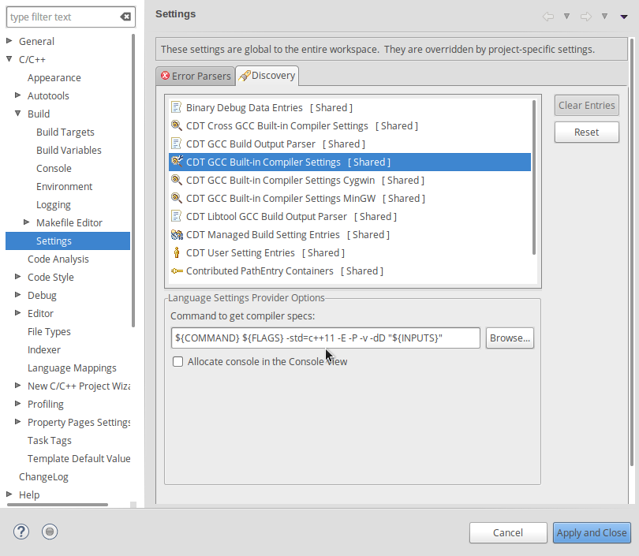

创建自己的项目
It is not advised to modify the SimGrid source code directly, as it
would make it difficult to upgrade to the next version of SimGrid.
Instead, you should create your own working directory somewhere on
your disk (say /home/joe/MyFirstSimulator/), and write your code
in there.
Cloning a Template Project for S4U
If you plan to use the modern S4U interface of SimGrid, the easiest way is to clone the Template Project directly. It contains the necessary configuration to use cmake and S4U together.
Once you forked the project on FramaGit, do not forget to remove the fork relationship, as you won’t need it unless you plan to contribute to the template itself.
Building your project with CMake
Here follows a CMakeLists.txt file that you can use as a starting point for your S4U project (see below for MPI projects). It builds two simulators from a given set of source files.
cmake_minimum_required(VERSION 3.12)
project(MyFirstSimulator)
set(CMAKE_CXX_STANDARD 17)
set(CMAKE_CXX_FLAGS "${CMAKE_CXX_FLAGS} -O3 -funroll-loops -fno-strict-aliasing -flto=auto")
set(CMAKE_MODULE_PATH ${CMAKE_MODULE_PATH} "${CMAKE_SOURCE_DIR}/cmake/Modules/")
find_package(SimGrid REQUIRED)
include_directories(${SimGrid_INCLUDE_DIR})
set(SIMULATOR_SOURCES main.c other.c util.c)
add_executable(my_simulator ${SIMULATOR_SOURCES})
target_link_libraries(my_simulator ${SimGrid_LIBRARY})
set(OTHER_SOURCES blah.c bar.c foo.h)
add_executable(other_xp ${OTHER_SOURCES})
target_link_libraries(other_xp ${SimGrid_LIBRARY})
For that, you need FindSimGrid.cmake, which is located at the root of the SimGrid tree. You can either copy this file into the cmake/Modules directory of your project, or use the version installed on the disk. Both solutions present advantages and drawbacks: if you copy the file, you have to keep it in sync manually but your project will produce relevant error messages when trying to compile on a machine where SimGrid is not installed. Please also refer to the file header for more information.
MPI projects should NOT search for MPI as usual in cmake, but instead use the smpi_c_target() macro
to declare that a given target is meant to be executed in smpirun (which path is set in ${SMPIRUN}).
This macro should work for C and C++ programs. Here is a small example:
# Search FindSimgrid in my sources
set(CMAKE_MODULE_PATH ${CMAKE_MODULE_PATH} "${CMAKE_SOURCE_DIR}")
find_package(SimGrid)
# Declare an executable, and specify that it's meant to run within smpirun
add_executable(roundtrip roundtrip.c)
smpi_c_target(roundtrip)
# Declare a test running our executable in ${SMPIRUN}
enable_testing()
add_test(NAME RoundTrip
COMMAND ${SMPIRUN} -platform ${CMAKE_SOURCE_DIR}/../cluster_backbone.xml -np 2 ./roundtrip)
To compile Fortran code with cmake, you must override the MPI_Fortran_COMPILER variable as follows, but it will probably
break some configuration checks, so you should export SMPI_PRETEND_CC=1 during the configuration (not during the compilation
nor the execution).
$ SMPI_PRETEND_CC=1 cmake -DMPI_C_COMPILER=/opt/simgrid/bin/smpicc -DMPI_CXX_COMPILER=/opt/simgrid/bin/smpicxx -DMPI_Fortran_COMPILER=/opt/simgrid/bin/smpiff .
$ make
Building your project with Makefile
Here is a Makefile that will work if your project is composed of three
C files named util.h, util.c and mysimulator.c. You should
take it as a starting point, and adapt it to your code. There is
plenty of documentation and tutorials on Makefile if the file’s
comments are not enough for you.
# The first rule of a Makefile is the default target. It will be built when make is called with no parameter
# Here, we want to build the binary 'mysimulator'
all: mysimulator
# This second rule lists the dependencies of the mysimulator binary
# How this dependencies are linked is described in an implicit rule below
mysimulator: mysimulator.o util.o
# These third give the dependencies of the each source file
mysimulator.o: mysimulator.c util.h # list every .h that you use
util.o: util.c util.h
# Some configuration
SIMGRID_INSTALL_PATH = /opt/simgrid # Where you installed simgrid
CC = gcc # Your compiler
WARNING = -Wshadow -Wcast-align -Waggregate-return -Wmissing-prototypes \
-Wmissing-declarations -Wstrict-prototypes -Wmissing-prototypes \
-Wmissing-declarations -Wmissing-noreturn -Wredundant-decls \
-Wnested-externs -Wpointer-arith -Wwrite-strings -finline-functions
# CFLAGS = -g -O0 $(WARNINGS) # Use this line to make debugging easier
CFLAGS = -g -O2 $(WARNINGS) # Use this line to get better performance
# No change should be mandated past that line
#############################################
# The following are implicit rules, used by default to actually build
# the targets for which you listed the dependencies above.
# The blanks before the $(CC) must be a Tab char, not spaces
%: %.o
$(CC) -L$(SIMGRID_INSTALL_PATH)/lib/ $(CFLAGS) $^ -lsimgrid -o $@
%.o: %.c
$(CC) -I$(SIMGRID_INSTALL_PATH)/include $(CFLAGS) -c -o $@ $<
clean:
rm -f *.o *~
.PHONY: clean
用 Eclipse 开发 C++
If you wish to develop your plugin or modify SimGrid using Eclipse. You have to run cmake and import it as a Makefile project.
Next, you have to activate C++17 in your build settings, add -std=c++17 in the CDT GCC Built-in compiler settings.

Troubleshooting your Project Setup
Library not found
When the library cannot be found, you will get such an error message similar to:
$ ./masterworker1: error while loading shared libraries: libsimgrid.so: cannot open shared object file: No such file or directory
To fix this, add the path to where you installed the library to the
LD_LIBRARY_PATH variable. You can add the following line to your
~/.bashrc so that it gets executed each time you log into your
computer.
export LD_LIBRARY_PATH=/opt/simgrid/lib
Many undefined references
masterworker.c:209: undefined reference to `sg_version_check'
(and many other undefined references)
This happens when the linker tries to use the wrong library. Use
LD_LIBRARY_PATH as in the previous item to provide the path to the
right library.
Only a few undefined references
Sometimes, the compilation only spits very few “undefined reference” errors. A possible cause is that the system selected an old version of the SimGrid library somewhere on your disk.
Discover which version is used with ldd name-of-yoursimulator.
Once you’ve found the obsolete copy of SimGrid, just erase it, and
recompile and relaunch your program.